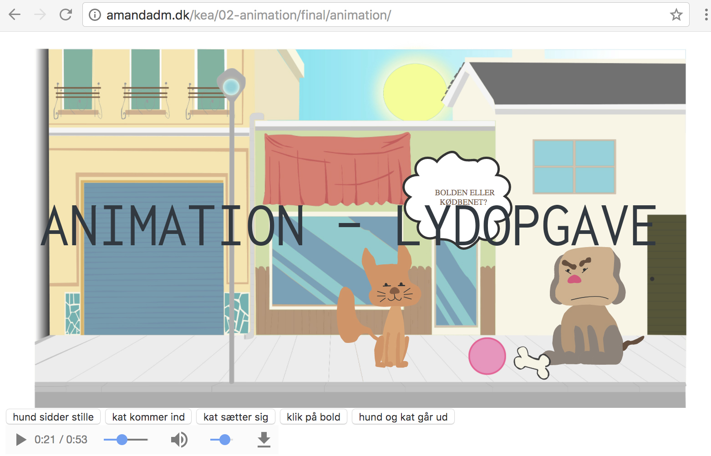

I denne opgave skulle vi indsætte lyd i vores animation. Jeg har her fundet tre lyde at sætte ind:
- Baggrundslyd
- Lyd til hund
- Lyd til kat
Selve denne opgave syntes jeg var lidt kompliceret, da jeg i starten ikke forstod hvordan jeg satte lyden ind. Men da jeg nu har siddet med det selv giver det god mening for mig, og jeg har fundet ud af kodernes funktioner.
